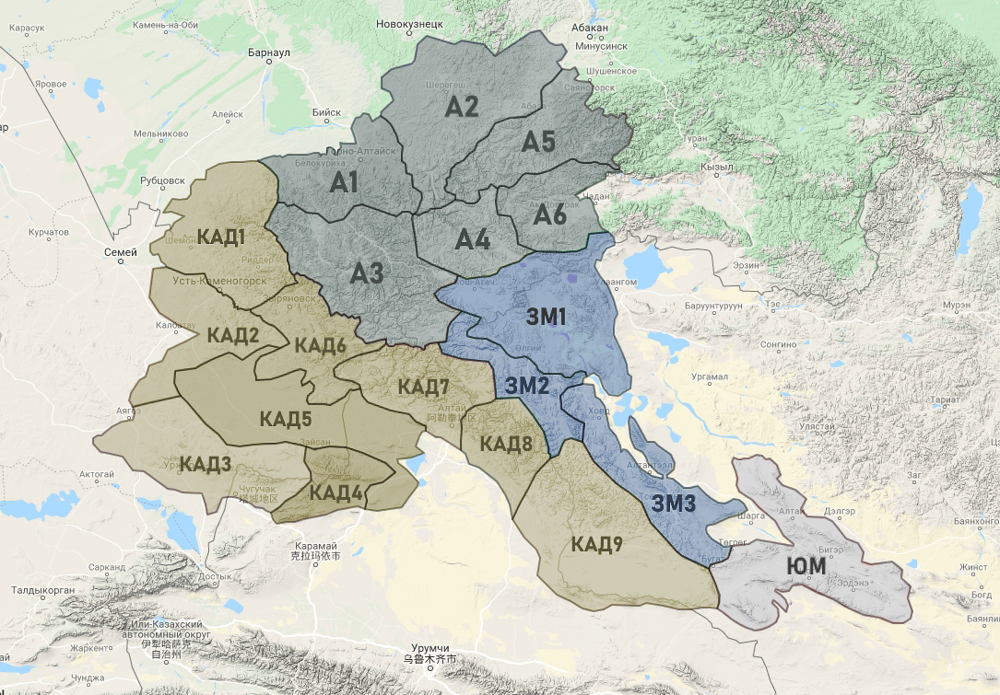

Oxytropis DC Алтайской горной страны
Алтайская горная страна
Алтайская горная страна – расположена на рубежах субконтинентов Северной и Центральной Азии между 44°30ґ и примерно 53–54° северной широты и 80°30` – 82° – 92°30` – 95° – 98° восточной долготы. Это территория около 550 000 кв. км в пределах России, Казахстана, Китая и Монголии.
Алтайская горная страна в фотографиях.

Схема ботанико–географического районирования Алтайской горной страны по Р.В. Камелину (2005), выполненная в WP Google Maps (Vaganov, Shmakov, Gudkova, 2019).
Условные обозначения: А – Алтайская (районы: А1 – Северно-Алтайский, А2 – Северо-Восточно-Алтайский, А3 – Центрально-Алтайский, А4 – Чулышманский, А5 – Абакано-Джебашский, А6 – Хемчикский); КАД – Алтае-Джунгарская (районы: КАД1 – Северо-Западно-Алтайский, КАД2 – Калбинский, КАД3 – Тарбагатайский, КАД4 – Саурский, КАД5 – Зайсанский, КАД6 – Бухтарминский, КАД7 – Маркаколь-Канасский, КАД8 – Черно-Иртышский, КАД9 – Алтае-Джунгарский); ЗМ, ЮМ – Тувинско-Монгольская (районы: ЗМ1 – Чуе-Кобдосский, ЗМ2 – Цаган-Гольский, ЗМ3 – Кобдосско-Тонхильский, ЮМ – Южно-Монгольский).
Алтайская горная страна – самое высокое поднятие среди горных стран Северной Азии. Высшие точки его – двуглавая Белуха (4506 и 4400м) в Катунском хребте и горный узел Таван–Богдо–Ула (пять священных гор с 3 крупнейшими вершинами в 4374, 4360 и 3981 м). Еще в 6 хребтах и горных массивах Алтая вершины превышают 4000 м (Мунх–Хайрхан, Цаст–Ула, Северо–Чуйские Альпы, Хархира, Сутай–Ула, Тургэн–Ула), а в еще 10 хребтах и горных массивах Алтая и Саура – вершины выше 3700-3900 м. Замечательными особенностями Алтайской горной страны являются ступенчатое сложение всего поднятия с тремя основными уровнями выравнивания, наличие в центральном куполовидном поднятии обширного высокогорного плато на высотах 2200–2400 м и двухступенчатой системы плоских межгорных котловин на уровнях 1400 и 1800–1900 м и, наконец, сочетание субширотного и субмеридианального (вплоть до меридианального) простирания хребтов. Связано это с тем, что в разных районах Алтайской горной страны хорошо сохранились на разных уровнях массивы древнего пенеплена, испытавшего неоднократное блоковое поднятие, лишь в конце третичного и в четвертичном периоде омоложенное новейшими тектоническими подвижками, а также древним, более мощным, чем ныне, оледенением. Именно поэтому и вершинные участки многих хребтов Алтайской горной страны представляют широкие плоские водоразделы, на которых вздымаются отдельные вершины или горные массивы как совершенно новейшие, так и, нередко, явно останцовые. Особенно свойственно это для Русского Алтая и южной части Монгольского Алтая, верхней части Тарбагатая и Адж–Богдо. Господство в тектонике Алтая именно массивных блоковых поднятий подчеркивает и хорошо развитый по северо-западной периферии Алтая, а также по краям Зайсанской котловины и отчасти котловины Барун–Хурай передовой уступ на высотах прилегающих равнин – в среднем примерно в 300–340 м на севере и западе всей страны, и примерно 400–450 м в Зайсанской котловине и Барун–Хурае. На востоке Алтайской горной страны пьедестал передовых низкогорий, а то и среднегорных и даже резко выдающихся высокогорных массивов находится много выше, особенно по направлению с севера на юг. Это и понятно, поскольку он образуется уровнями межгорных котловин – Минусинской (нижний уровень 240 м), Тувинской (640 м), Убсунурской (743 м), Котловины Больших озер (1028 м), Шаргын–Гоби (948 м), Заалтайской Гоби (выше 1000 м). Алтайская горная страна – это и важнейший водораздельный узел. Здесь расположена основная часть верхнего (горного) водосбора Оби и Иртыша, небольшая часть водосбора Енисея (крупные левые притоки Кемчик и Абакан) и водосборные бассейны, питающие целый ряд разновеликих бессточных котловин Казахстана, Джунгарии и Монголии. Это и крупные котловины Балхаша (современный сток р. Аягуз почти не доходит до озера), Алаколя–Сассыколя, северной части Джунгарской Гоби (озеро Урунгу–нор, очень недавно отделившееся от бассейна Иртыша), часть Котловины Больших озер (озеро Хара–ус–нур), а также борта котловины Барун–Хурай, бессточные озерные котловины с озерами Ачит–нур и Эрег–нур, Цаган–нур на севере и Алаг–нур на юге. Меньше роль Алтайского водосбора в питании самого крупного озера этого региона – Увс–нура (Убсу–нур).